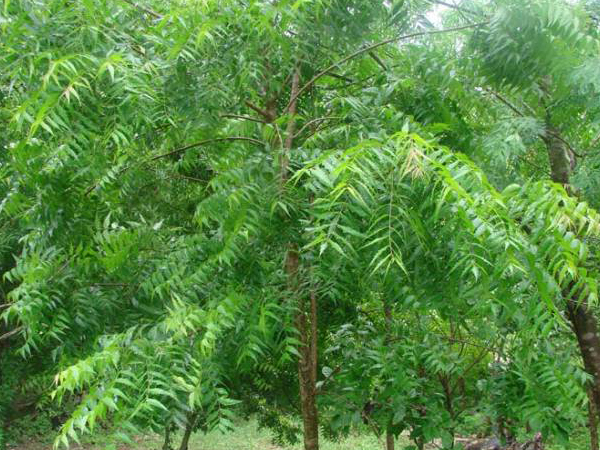
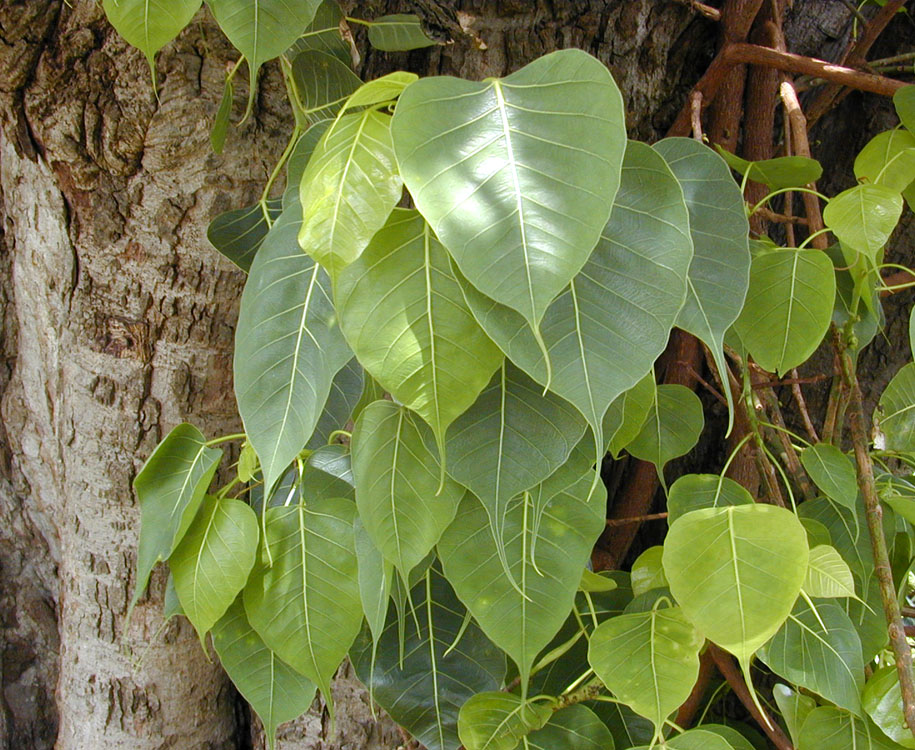

Banyan trees are mostly seen in different regions of the country and are the national tree of India that grows in a special type of soil. The oldest Banyan tree is present in Kolkata. This huge type of tree has extensive branches in order to provide support to it, having height more than 21 m. Leaves are of 10-20 cm long. Leaves are used as plates in India. Wood is used for making furniture, door, etc. Leaf, seeds and bark are useful for various diseases and disorders.

neem-tree:
The neem is both a deciduous and evergreen tree, and it is often referred to as either a nimtree, or an Indian Lilac. It belongs to the family meliaceae, or mahogany. It is considered evergreen, however in severe droughts there is a chance they may shed their leaves.
The neem tree is usually found in tropical and semi tropical regions, and is known for its resistance to draught. It prefers annual rainfall of around 800ml, with temperature hovering around 80 degree Fahrenheit, never falling below 39. Locations that possess all of the conditions are Iran, India, Laos, Cambodia, Bengal, Thailand, Myanmar, and Vietnam.
The neem tree grows incredibly fast, and will shoot up to an impressive 40 metres in its lifetime. Its branches are spread very wide and high, and on the ends of those you will find pinnate, dark green leaflets. In the spring it will explode with white, bisexual flowers, each branch sprouting a baffling 300 flowers per season!
This tree is utilized for its shade, as it is one of the only shade giving trees that is able to grow in these harsh regions. They’re often found around public spaces like temples and schools. The neem tree was actually labelled as a weed, and is able to spread overwhelmingly quickly. For this reason, it is illegal to transport any neem seeds or plants for risk of it becoming invasive in a foreign region

peepal:
Peepal tree is considered highly sacred, as people are of the belief that Lord Vishnu and many other Gods used to reside underneath it. Peepal plant is regarded as the representation of various Hindu Gods and Goddesses. The tree is also believed to be associated with the Mother Goddess during the period of Indus Valley civilization. People revere the Peepal tree and also perform puja dedicated to this tree.
The botanical name of Peepal is Ficus religiosa. This holy plant is known by different names in different languages like Bodhi in Sanskrit, Piplo in Gujrati, Al or Aryal in Malayalam etc. It is said that peepal tree protects mankind from the evil eye and also keeps away dreadful dreams. There is mention about the holiness of Peepal tree in the Vedas. Apart from its religious significance, Peepal tree is also known for its medicinal value.